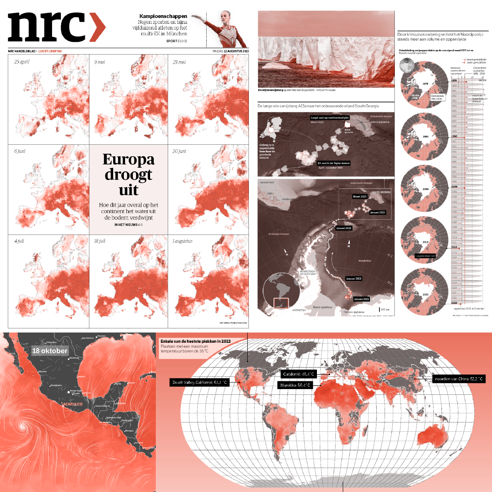
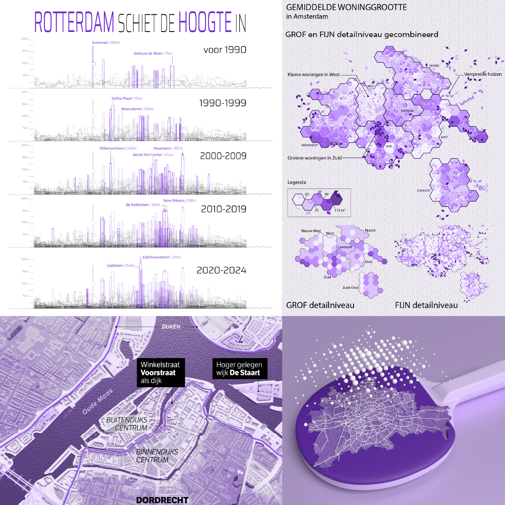
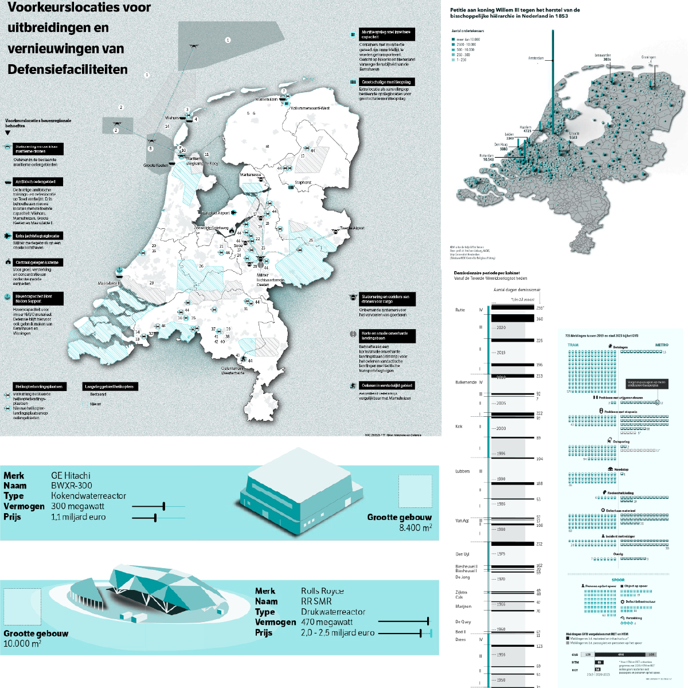

Data-ontwerper
met een geo-instinct
Ik help redacties en onderzoeksorganisaties hun verhalen visueel sterker maken. Vanuit data-analyse leg ik patronen, bewegingen en veranderingen over tijd bloot. De visualisatievorm volgt het verhaal. Ik vertaal data naar een helder en publicatieklaar eindproduct.
Werk




